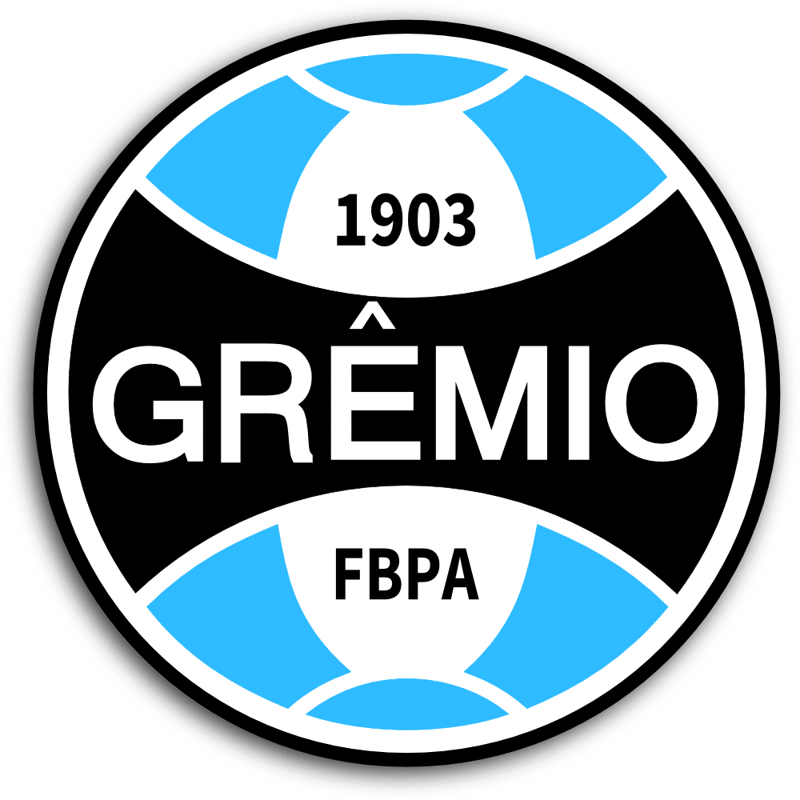

História

O Grêmio foi fundado em 15 de setembro de 1903, no centro de Porto Alegre, por Cândido Dias da Silva e outros 32 sócios, em sua maioria descendentes de imigrantes alemães e ingleses.
A tradição conta que tudo começou após uma partida de exibição do time Rio Grande: quando a bola furou, Cândido Dias — único dono de uma bola de futebol na cidade — emprestou a sua para o jogo continuar. Dias depois, ele reuniu os presentes e fundou o clube.
Desde então, o Grêmio se tornou um dos clubes mais tradicionais do país, com uma das torcidas mais apaixonadas do Rio Grande do Sul.